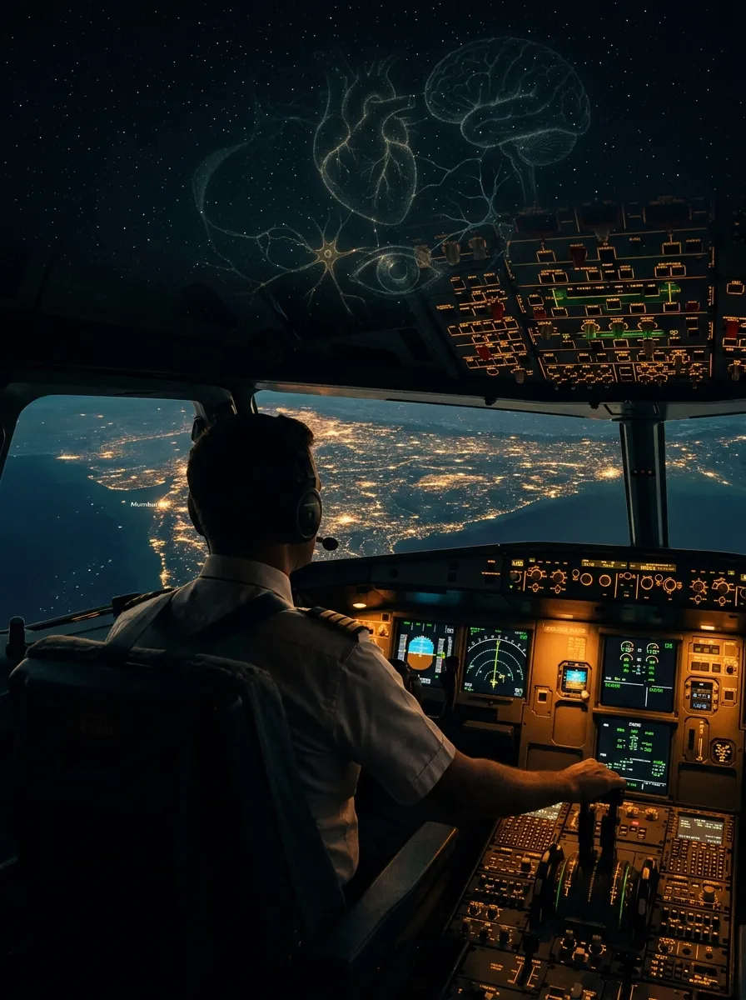

© 2026 Capt. Pankaj Pahil · Ghost Aviator. All rights reserved.
First edition, 2026. Published free of charge in service of student pilots at ghostaviator.com. This work may not be reproduced, redistributed, or sold without the written permission of the author.
Disclaimer: This book is a study aid for the DGCA Human Performance & Limitations examination. Every figure is compiled to be exam-accurate, but syllabi and regulations change — always confirm current values against the latest DGCA CARs and AICs. Nothing herein overrides an official publication, a medical examiner, or a flight manual.
Of all the subjects a pilot must master, this is the only one about you. Navigation teaches the earth; meteorology teaches the sky; technical general teaches the machine. Human Performance teaches the one component that flies them all — and the one that most often fails.
In seventeen years of flying and instructing I have watched good pilots undone not by weather or metal, but by an ache in a sinus, a drink the night before, a light stared at too long in the dark, a slow bank that felt like level. None of it was mysterious. All of it was in a textbook. The gap between knowing a limit and respecting it at altitude is where this subject lives — and where accidents are quietly prevented, one informed decision at a time.
I wrote these notes for my own students, and I have gathered them here for every student pilot in India who cannot afford an expensive course but deserves a correct one. Learn the numbers until they are reflex. Understand the mechanisms until they are obvious. And then carry them into the cockpit, where the only exam that matters is the one you pass every time you land safely.
— Capt. Pankaj Pahil
The book is built in eleven modules and twenty-six chapters, running from the air outside the aircraft to the mind inside the pilot. Every chapter follows the same rhythm, and the furniture is always the same:
| You will see… | It means… |
|---|---|
| Blue box | A core definition or principle to anchor on. |
| Amber box | An exam tip or mnemonic — the thing the examiner actually asks. |
| Red box | A danger, a killer item, or a number to memorise exactly. |
| Green box | A standard operating procedure — what a professional does. |
| Cinematic plate | A full diagram — anatomy, cockpit or process — to make the mechanism unforgettable. |
| Mnemonic pill | A memory aid; collected together in Chapter 25. |